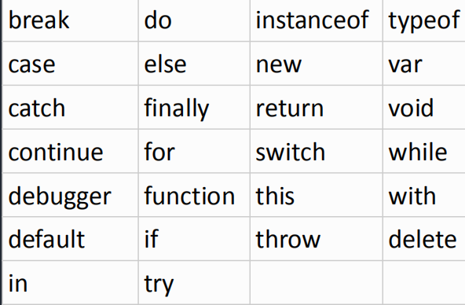
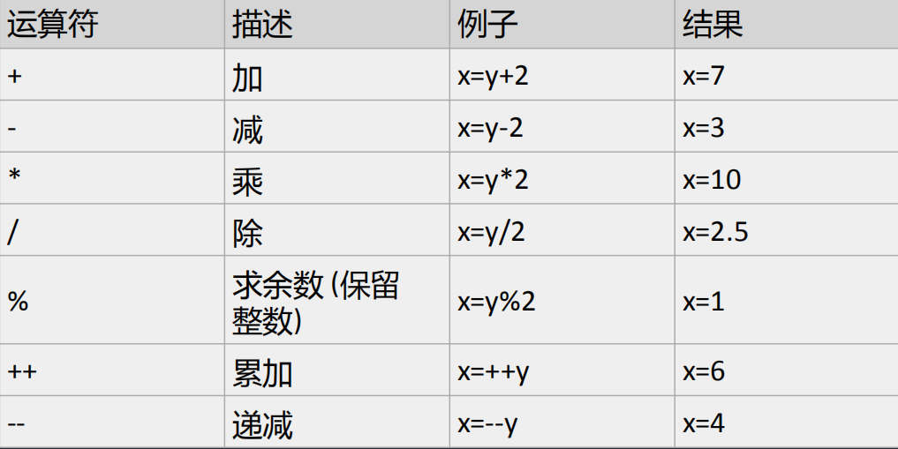
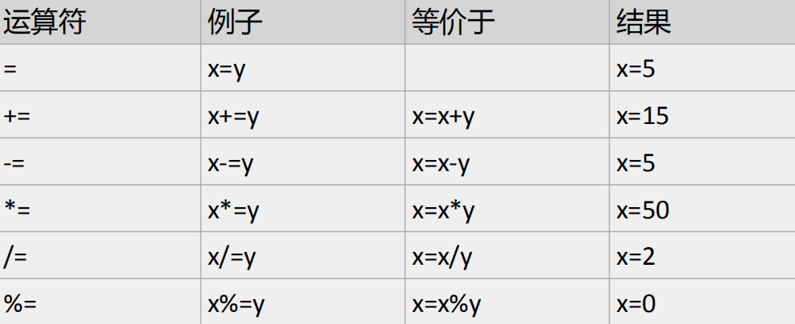
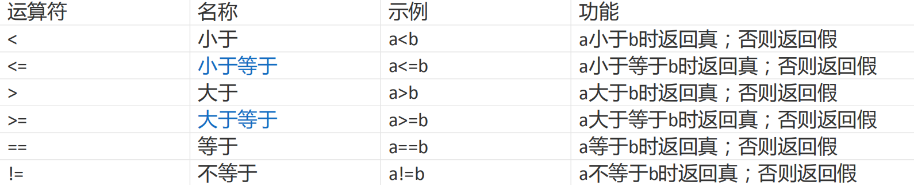

原文出处:本文由博客园博主改鋽提供。
原文连接:https://www.cnblogs.com/hushengbin789/p/hushengbin789.html
原文连接:https://www.cnblogs.com/hushengbin789/p/hushengbin789.html
javascript的基本语法一
1、组成
javascript由三方组成，分别是：
1）ECMAScript：js基本语法与标准
2）BOM： 操作浏览器的接口，提供了访问某些功能的途径以及操作方法。
3）DOM： 操作 HTML 文档的接口，提供了访问 HTML 文档的途径以及操作方法。
2、javascript输出
JavaScript语句向浏览器发出的命令。语句的作用是告诉浏览器该做什么。
<script>
alert("我是用来弹出消息框的！")；//会弹出来
document.write("hello world!");//会把内容显示在页面上
</script>tip：分号是可选项，可写可不写，对于初学者建议写上分号。
3、注释
单行注释 //多行注释 /* */文档注释 /** */
4、运行顺序
javascript和HTML代码在同一个文件中写，它们的执行顺序是从上朝下，谁在前先执行谁。
5、编辑工具和运行环境
编辑工具：写代码的工具 如：dreamweaver，editplus，Notepad++，sublime,webstrom..运行环境：看结果的地方 如：IE，firefox，chrome...
6、变量
变量是用来储存信息的“容器”
变量定义（声明）：
var age; //var是关键字，age是变量名
赋值：
age=20; //20是数据 "="是赋值
定义的同时赋值：
var age=20;
可以一次定义多个变量：
var myname=“吴京", age=18，weight=140;
使用变量：
alert(myname);
注：1， 变量必须先赋值再使用
var x=5;
var y=8;
var z="hello";
<script>
var i=10;
var b=10;
var m=i+b;
document.write(m);//显示结果为20
</script>7、简单指令
alert(""); 提示框；
confirm(""); 确认框，点击后会响应返回true或false；
prompt(); 弹出一个输入框；
document.write(""); 在页面上显示内容
console.log(""); 在控制台打印相应的信息；
console.dir(""); 在控制台打印出该对象的所有信息；8、转义字符
\
\r 回车
\n 空格
\t 缩进
\\ 反斜杠9、关键字及保留字


10、运算符
1).算数运算符
假设y=5；


2).赋值运算符
给定x=10和y=5


例题
Tip:var i=10;
var j=i++ +i++ + i++; //10 11 12
alert(j);//显示为33
alert(i);//显示为13
11、字符串拼接
任何类型与字符串相加都会被转成字符串类型
function musum(){
var i=3;
var j="3";
var m=i+j;
document.getElementById("sumid").innerHTML=m;
}
// 显示为3312、关系运算符


13、逻辑运算符
&& || !
&&与的运算规则是：同真为真，一架则假（只要有一个是假的，那么就是假的）
var r=ture;
var f=false;
alert(true && true);//true
alert(true && false);//false
alert(false && false);//false||或的运算规则是：一真为真，一假则假；
var r=ture;
var f=false;
alert(t || f);//true
alert(f || t);//true
alert(t || t);//true
alert(f || f);//false!非的运算规则是：真是假，假是真；
alert(! true);//false
alert(! false);//true逻辑短路：
当逻辑运算符前面的表达式已经能够决定整个表达式的结果时，后面的表达式就不能参与运算